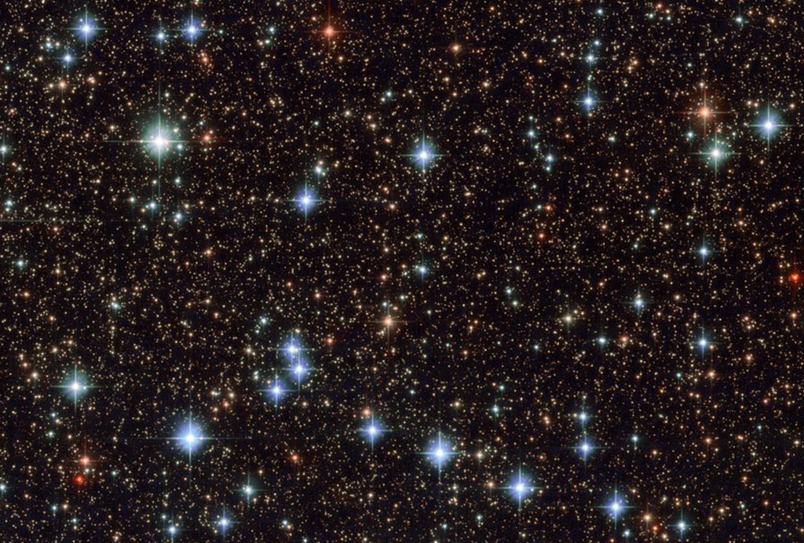

주간탐사
Topic : 암흑 에너지는 존재할까?

‘암흑에너지’란 만유인력과 정반대되는 개념이다. 우주 팽창 속도가 점점 빨라지고 있다는 것을 발견한 과학자들은 질량을 가진 물질 사이에 서로 끌어당기는 중력만 있다면 만유일력보다 더 강한 밀어내는 힘이 있을 것으로 생각했다.
그리고 지금 많은 우주론자들(cosmologists)은 전체 우주 가운데 69%가 암흑 에너지에 의해 형성된 것이라고 믿고 있는 중이다. 시험을 거친 표준 모형까지 만들어 세상에 선보이고 있지만 이론물리학자들의 생각은 다르다. 우주팽창을 설명하는데 구태여 암흑 에너지란 개념까지 동원할 필요가 없다는 주장이다. 밀도(density) 안의 변이(variations), 불균등성(inhomogeneities)과 같은 물리학적인 개념들로 우주팽창을 충분히 설명할 수 있다고 보고 있다. 아인슈타인의 일반상대성이론으로 충분히 설명할 수 있는 사안을 암흑에너지까지 끌어들이며 어렵게 만들고 있다는 주장이다. 이런 주장에 우주론자들은 강력히 반발하고 있다.